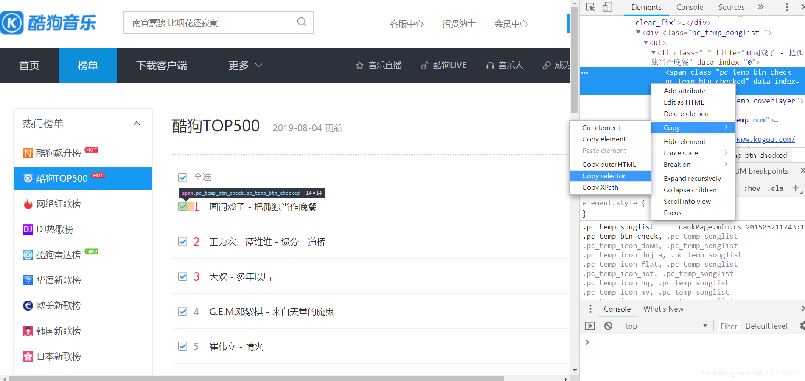
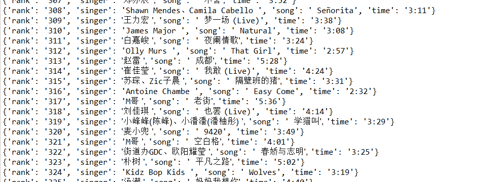

原文出处:本文由博客园博主JUNECODE提供。
原文连接:https://www.cnblogs.com/junecode/p/11306266.html
原文连接:https://www.cnblogs.com/junecode/p/11306266.html
酷狗网址：https://www.kugou.com/yy/rank/home/1-8888.html?from=rank
环境：eclipse+pydev
1 import requests
2 from bs4 import BeautifulSoup
3 import time
4
5 headers ={
6 'User-Agent':'Mozilla/5.0 (Windows NT 10.0; WOW64) AppleWebKit/537.36 (KHTML, like Gecko) Chrome/69.0.3497.100 Safari/537.36 QIHU 360EE'
7 } #加入请求头，伪装成浏览器，以便更好抓取数据
8
9 def get_info(url): #定义获取信息的函数
10 wb_data = requests.get(url,headers = headers)
11 soup = BeautifulSoup(wb_data.text,'lxml')
12 ranks = soup.select('span.pc_temp_num') #selet()方法见下面图示
13 titles = soup.select('#rankWrap > div.pc_temp_songlist > ul > li > a')
14 times = soup.select('span.pc_temp_tips_r > span')
15 for rank,title,time in zip(ranks,titles,times):
16 data = {
17 'rank':rank.get_text().strip(), #歌曲序号
18 'singer':title.get_text().split('-')[0], #歌手名称
19 'song':title.get_text().split('-')[1], #歌曲名称
20 'time':time.get_text().strip() #歌曲时长
21 }
22 print (data)
23
24 if __name__ == '__main__': #程序主入口
25 urls = ['https://www.kugou.com/yy/rank/home/{}-8888.html?from=rank'.format(str(i)) for i in range(1,24)] #构建多页url，500条结果需23组，每页网页22条
26 for url in urls:
27 get_info(url)
28 time.sleep(1) #暂停程序，避免因提交网页请求频率过快而导致程序异常终止请求头获取方式：打开chrome浏览器，输入chrome://version，添加时加上‘User-Agent’:即可（获得信息应置于' '中）。
select()使用方法:该方法类似于中国>广东省>惠州市，从大到小，提取信息，可通过chrome复制得到，如图示：

注意：将li:nth-of-child(1)改为li
运行结果：
